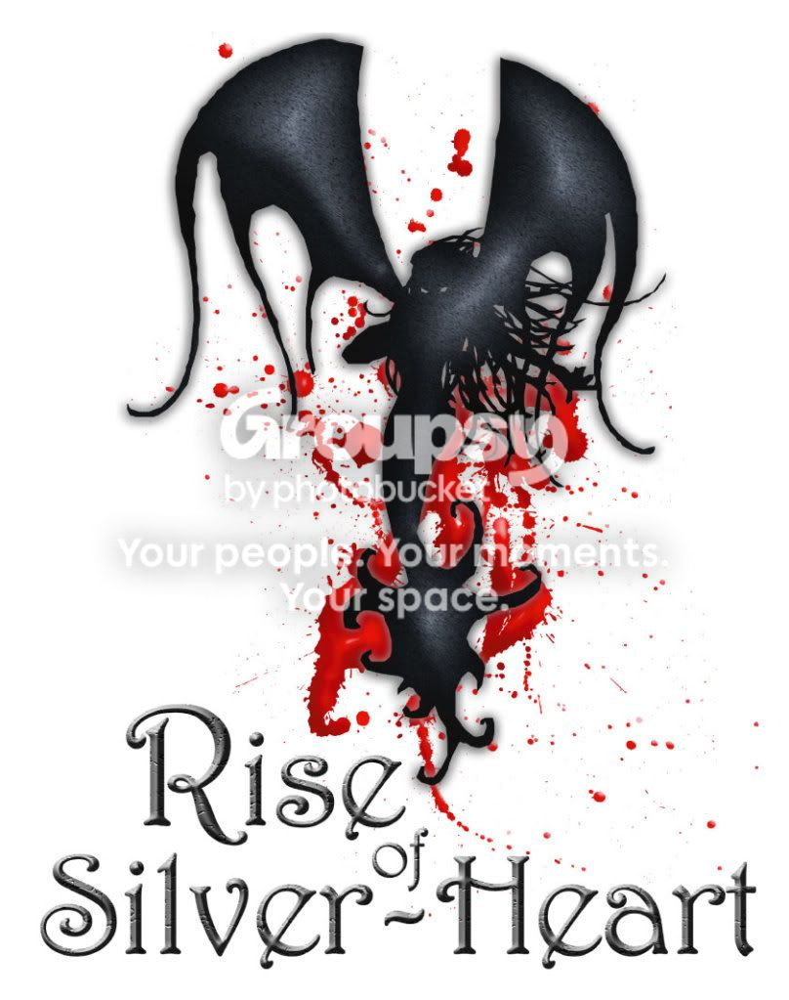

ไม่จำกัดความยาวด้วยสินะ เดี๋ยวลองคิด ๆ แล้วส่งไปให้ครับ
ช่วงนี้หายเพราะ x2 - -
บางที.. คนที่ดีที่สุดก็อาจจะเลวดีที่สุดได้เหมือนกันนะ
ก็ต้องดูกันต่อไป ~
ส่วนคำถามที่ให้ทายก็ ...
1. เท็จ
2. จริง
3. เท็จ
4. จริง
5. เท็จ
ไม่รู้จะถูกไหม ก็เดานินะ =w="
 โดย ECO » อาทิตย์ 03 พ.ค. 2009 1:28 am
โดย ECO » อาทิตย์ 03 พ.ค. 2009 1:28 am
1. เท็จ
2. จริง
3. เท็จ
4. จริง
5. เท็จ

 โดย ECO » อาทิตย์ 03 พ.ค. 2009 11:38 am
โดย ECO » อาทิตย์ 03 พ.ค. 2009 11:38 am
1.เรื่องเท็จ
2.เรื่องจริง
3.เรื่องเท็จ
4.เรื่องจริง
5.เรื่องเท็จ
1.โซเวียชอบผู้ชายชนิดเถื่อนๆ =[]= !!!
2.นอกจากพิณแล้ว โซวีน่าสามารถเล่นเปียโนและไวโอลินได้
3.โซเวียเคยแอบคิดหนีออกจากบ้านกับเพื่อนเมื่อตอนยังเด็กๆ
4.อพอลโลคือเทพในตำนานกรีกที่โซวีน่าโปรดปราน
5.เธอเคยหลงใหลในด้านมืดมาก่อน

 โดย ECO » อาทิตย์ 03 พ.ค. 2009 9:08 pm
โดย ECO » อาทิตย์ 03 พ.ค. 2009 9:08 pm
1.น่าจะจริง
2.น่าจะหลอก
3.Sure(มั้ง?)
4.Fake One!!(ม่ายจริงม้าง)
5.True(จริงแท้)
1.เปนจริง
2.น่าจะจริง
3.จริงๆล่ะม้าง
4.ผมว่าจริง
5.จริงแน่นอน ฟันผุ เอ้ย ฟันธง!
 ใครจะรู้ ที่แท้จริงอาจจะมีความจริงของตัวละครไหนๆโผล่ออกมาก้อได้แหะ เล่นกันแบบนี้
ใครจะรู้ ที่แท้จริงอาจจะมีความจริงของตัวละครไหนๆโผล่ออกมาก้อได้แหะ เล่นกันแบบนี้  (งี้เจ๊เทียมีอะไรเล่นได้ต่ออีกยาวล่ะซิเนี่ย )
(งี้เจ๊เทียมีอะไรเล่นได้ต่ออีกยาวล่ะซิเนี่ย ) โดย ECO » จันทร์ 04 พ.ค. 2009 12:10 pm
โดย ECO » จันทร์ 04 พ.ค. 2009 12:10 pm
 โดย ECO » จันทร์ 04 พ.ค. 2009 4:57 pm
โดย ECO » จันทร์ 04 พ.ค. 2009 4:57 pm
1.GPเคยล่ามังกร เพียงเพราะอยากลองกินเนื้อมันดู
2.ฝีมือดาบของGPนั้นได้มาจากพรสวรรค์ล้วนๆ
3.ระหว่างที่อยู่ในกองทัพ GPมักชอบขัดคำสั่ง แต่งานออกมาสำเร็จทุกครั้ง
4.ตัวละครGPมีต้นแบบมาจากเซฟิรอธในไฟนอล7
5.GPสามารถปล่อยฮาโดเคนได้
 โดย ECO » จันทร์ 04 พ.ค. 2009 5:30 pm
โดย ECO » จันทร์ 04 พ.ค. 2009 5:30 pm




 โดย ECO » จันทร์ 04 พ.ค. 2009 7:45 pm
โดย ECO » จันทร์ 04 พ.ค. 2009 7:45 pm
Zilenia เขียน:หลังอ่านละมีจุดที่อยากจะคอมเม้น 3 จุด
1. จุดที่ เกรชเพย์น เรียก ฮิโยโกะว่า เธอ มีแสดงความสนิทสนมจนเกินกว่าจะเป็นศัตรูซะแล้ว
น่าจะใช้ราวๆว่า " เจ้า !! ฮิโยโกะ " จะแสดงถึงความเป็นศัตรู ได้ดีกว่า
ถ้าจะใช้เธอนี่ก็แบบว่า แสดงถึงความไม่ยี่หร่ะ ต่ออีกฝ่าย ราวๆว่า
"อะไรกัน เจ้าเองหรอกหรอ ฮิโยโกะ"
2. จุดเสียงดาบ Vs หอก "เคร้ง ! เคร้ง ! เคร้ง !" ที่เจ๊เทียร์ใช้ดูเหมือน ว่า ปะทะกันอย่างรุนแรงทั้ง 3 ครั้ง
ถ้าจะให้เข้าถึงอารมน่าจะใช้ ราวๆ ว่า "เคร้ง . . เคร้ง . . เคร้ง !!!"
อารมณ์ของวรรคนี้ก็จะประมาณว่า ปะทะเบาๆกัน 2 ครั้ง แล้ว ประจันหน้ากัน (อาวุธขัดอาวุธ)
3. ช่วงสุดท้ายที่ เกรช เพย์น สูกับ ฮิโยโกะ ถ้า เกรชเพย์น เยาะเย้ย ฮิโยโกะ ด้วยการเรียกดูที่เหมือนคนสนิท
จะได้อารมเย้ยหยันมาก "อะไรกัน แค่นี้เองหรอ ฮิโยะ" ซึ้งตัวละครแบบเกรช เพย์น ก็มีทั้งส่วนที่น่าจะทำและไม่น่าจะทำ

 โดย ECO » จันทร์ 04 พ.ค. 2009 8:57 pm
โดย ECO » จันทร์ 04 พ.ค. 2009 8:57 pm
แมว : ย่อ
1.GPเคยล่ามังกร เพียงเพราะอยากลองกินเนื้อมันดู
2.ฝีมือดาบของGPนั้นได้มาจากพรสวรรค์ล้วนๆ
3.ระหว่างที่อยู่ในกองทัพ GPมักชอบขัดคำสั่ง แต่งานออกมาสำเร็จทุกครั้ง
4.ตัวละครGPมีต้นแบบมาจากเซฟิรอธในไฟนอล7
5.GPสามารถปล่อยฮาโดเคนได้
 โดย ECO » อังคาร 05 พ.ค. 2009 10:41 am
โดย ECO » อังคาร 05 พ.ค. 2009 10:41 am
ถ้าดูจากที่ตา GP มันบ้าอำนาจแล้วล่ะก็ อาจจะอนุมานได้ว่าเขาไม่สนใจพวกที่่อ่อนกว่า แบบที่สู้กันยังไงๆ ตัวเองก็ชนะ
เรียกอีกอย่างคือ อาจเพราะว่า ตอนอยู่กองทัพ ตัวฮิโยโกะ อาจด้อยฝีมือกว่าเขาชนิดเทียบไม่ติด จึงไม่ใช่ศัตรูที่น่าหนักใจ หรือน่าจดจำเท่าใดนัก ในสายตาของตัวเขา
พอมาเจอกันอีกที ก็เลยเรียกแบบไม่ยี่หระแบบนั้นแหละ เพราะคิดว่า "ยังไงยัยนี่ก็สู้เขาไม่ได้หรอก" หรือ "ลูกแมวริอ่านสู้พญาราชสีห์" ประมาณนั้นมั้ง
ปล. ผมอาจพูดเบลอๆ บ้าๆ ไปหน่อยก็ชี้แจงด้วยนะครับ
ปล.2 ตกลง กองทัพ DEM ย้ายมาสังกัดซิลเวียได้อย่างไรกัน ยังไม่เฉลยเลย
ย้อนกลับไปยัง Fan Art & Fiction
กำลังดูบอร์ดนี้: ไม่มีสมาชิก และ บุคคลทั่วไป 2 ท่าน